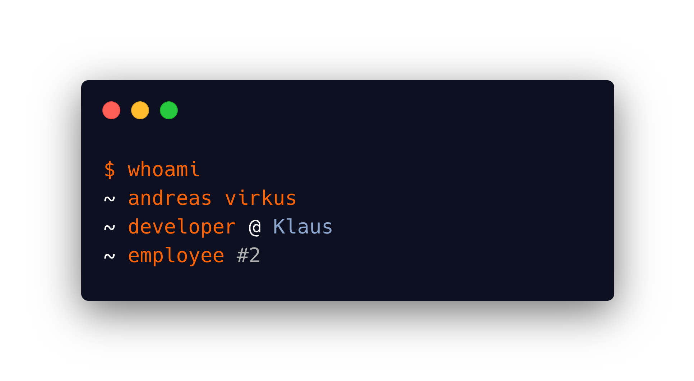

Klaus today
Conversation review &
QA platform for support teams
Klaus 2017
The spark ✨
Klaus 2018: part I
Gone fishing 🐳
Klaus 2018: part II
The build-up 🔨
Klaus 2019
Take-off! 🚀
Klaus 2020
Hitting orbit 🌍
# Thanks!
Find the slides & me on:
[github.com/andreasvirkus](https://github.com/andreasvirkus)